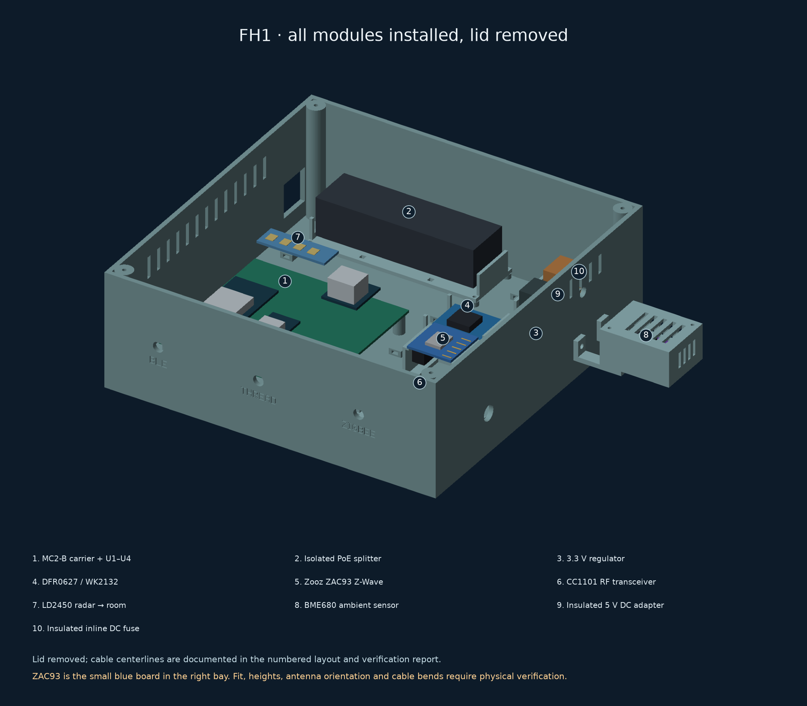

FH1 complete radio hub enclosure
Assembly instructions · Full assembly handbook · Digital verification · Component sources and fit uncertainty · Editable assembly · Exploded model
Every module has a declared location and mechanical retention. Digital checks do not replace measuring the actual ZAC93, other purchased modules, connector access, print tolerance or RF testing.



Print parts, individually within 220 × 220 mm
poe-splitter-tray ×1 · buck-tray ×1 · wk2132-tray ×1 · zwave-tray ×1 · cc1101-tray ×1 · power-utility-tray ×1 · base ×1 · lid ×1 · radar-holder ×1 · pod-arm ×2 · bme680-pod ×1 · bme680-pod-lid ×1 · fit-coupon ×1 · cc1101-port-blank ×1
Print the fit coupon first. Main shell 215 × 215 × 78 mm; BME680 pod attached across a 17 mm air gap. Radar faces the room through the lid. ZAC93 stock antenna stays unmodified.